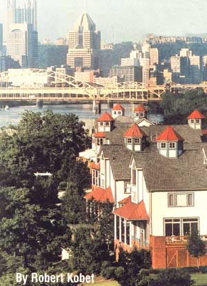

Once a blighted piece of land near the heart of Pittsburgh, Washington's Landing offers market-rate housing, offices, light industry, a rowing center and a public park. Pedestrian circulation is encouraged through attractive streetscaping and water access.